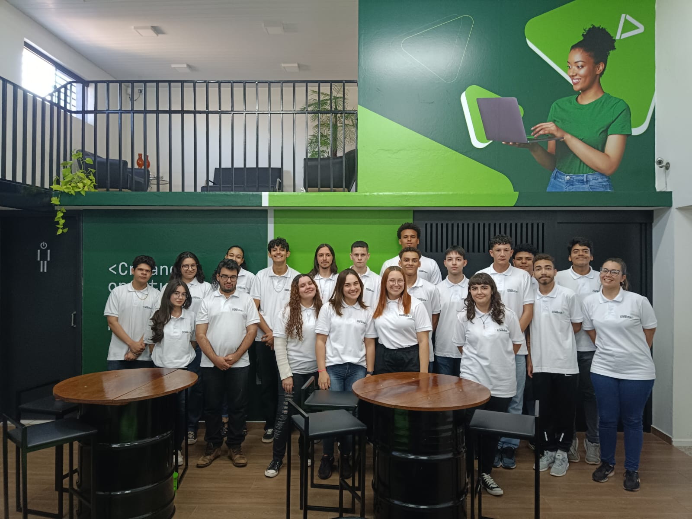
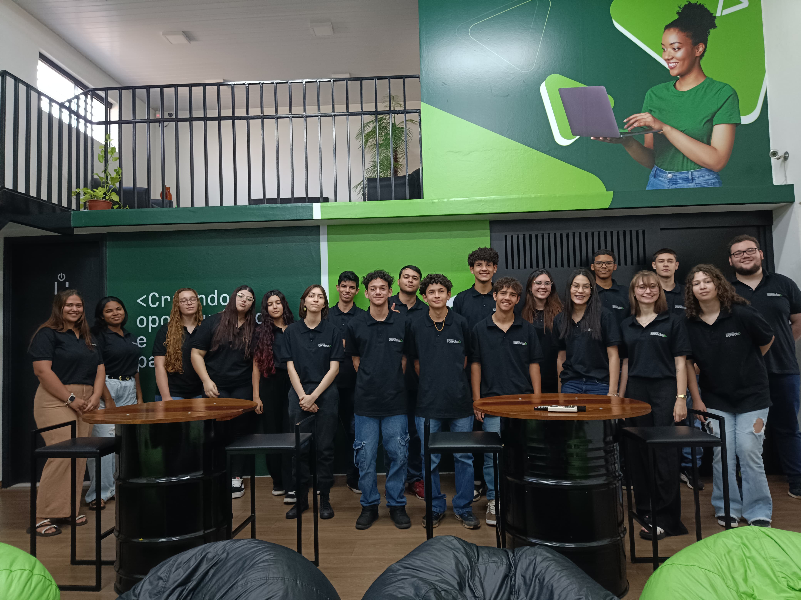
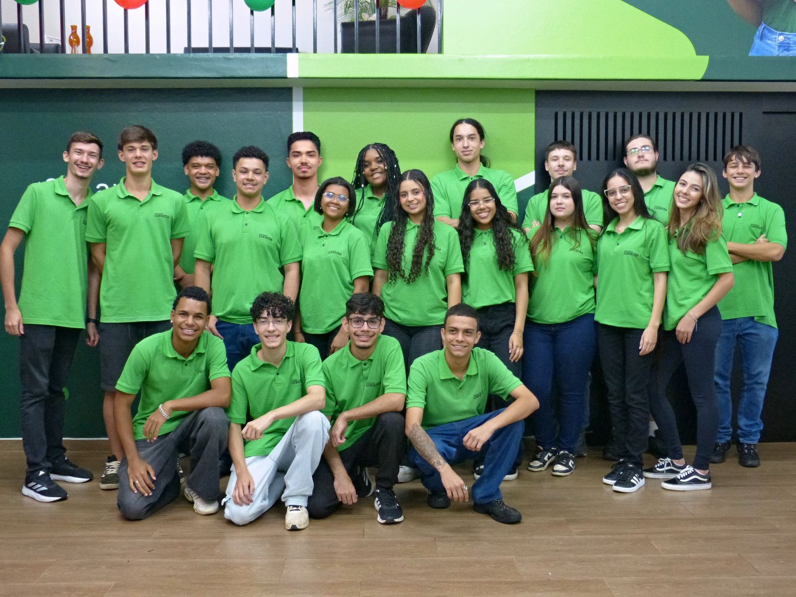
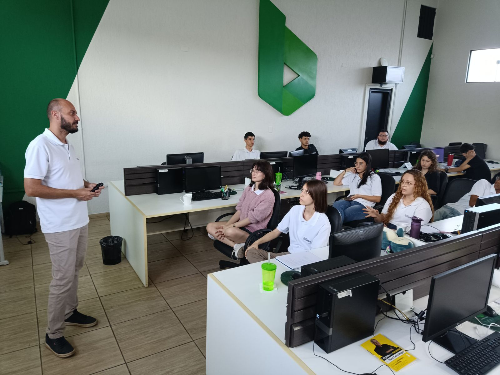
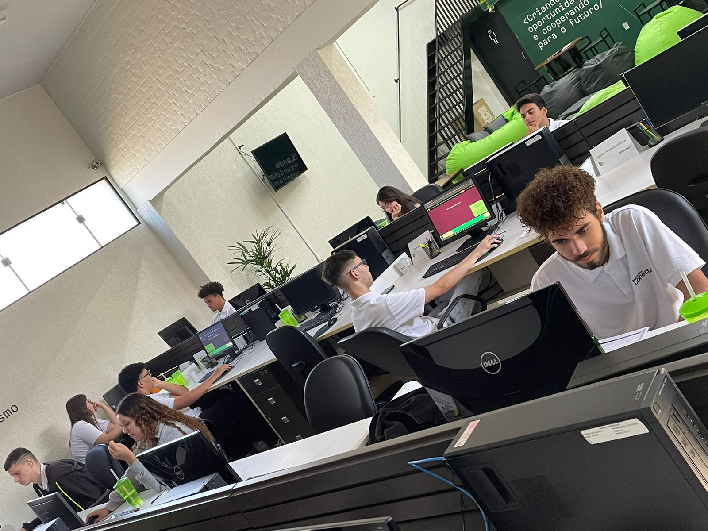

Barracred Conecta
Design System — Programa Social
As escolhas visuais do programa, os porquês de cada decisão e um tour pelas seções do novo site.
Paleta de Cores
Por que? Verde como identidade visual principal da marca Barracred. Fundo escuro verde para elegância e contraste. Acentos em lime, coral e indigo para variações de status e ações.
Fontes do Sistema
Por que? Space Grotesk para títulos (técnico, moderno). Poppins para corpo (limpo, legível, amigável). JetBrains Mono para códigos e detalhes técnicos.
Glassmorphism
Por que? Elementos translúcidos com blur criam profundidade. Superfícies com backdrop-filter: blur(12px) e bordas translúcidas para elegância.
Superfície Glass
background: rgba(255,255,255,.55)
backdrop-filter: blur(12px)
border: 1px solid rgba(255,255,255,.3)
Superfície Gradiente
background: linear-gradient(160deg, #0f7a56, #0a5e43, #063024)
border: 1px solid rgba(255,255,255,.2)
Botões
Por que? Botões com border-radius 14px e gradiente verde (primary→primary-dark). Hover lift 3px. Sombras coloridas com tons de verde para harmonia visual.
Responsividade
Por que? Grid adaptativo com Bootstrap — de mobile a desktop. Breakpoints em 980px, 768px, 720px, 480px e 400px.
Mapa do Site
O novo site apresenta o programa em uma página única e fluida. Cada seção foi pensada para guiar o visitante da primeira impressão até a inscrição.
Hero & Marquee
Por que? A primeira impressão vem da tagline "Criando Oportunidades e Cooperando para o Futuro", sobre um banner com fade e logo em destaque. Abaixo, a marquee strip percorre as áreas de formação em looping contínuo.
Seja bem-vindo ao Barracred Conecta
Por que? Aqui, acreditamos que cada jovem carrega um mundo de possibilidades. Criamos este espaço para inspirar, capacitar e criar conexões com o futuro por meio da educação, do conhecimento e do desenvolvimento humano.
Somos um Programa Social da Cooperativa Barracred, aberto a jovens que desejam crescer como pessoas, desenvolver habilidades profissionais e assumir, com consciência, seu papel na sociedade.
- Capacitação técnica e profissional
- Jornada de autoconhecimento e fortalecimento emocional
- Preparação e inserção no mundo do trabalho
- Guia por valores cooperativistas
- Educação como motor de mudança
- Cooperação e comunidade
- Protagonismo juvenil
- Oportunidades reais
O que é o Barracred Conecta?
Por que? Muito mais do que uma capacitação: uma porta de entrada para um novo mundo. Formação que une técnica, propósito e valores, com acompanhamento psicológico e apoio integral — tudo 100% gratuito, graças à Cooperativa Barracred.
Conteúdo completo para a jornada de formação.
Identidade do programa para os alunos.
Apoio para a locomoção até o programa.
Cuidado com a saúde e o bem-estar dos alunos.
Ferramentas para o desenvolvimento técnico.
Espaço equipado para as aulas de tecnologia.
Uma trilha de 10 meses
Por que? O programa caminha em blocos que se somam — cada etapa apoiada na anterior, até chegar na conexão com o mercado de trabalho. E quem já viveu essa experiência conta: muda vidas.
"O Conecta mudou minha vida. Aprendi a programar e descobri que posso construir um futuro melhor pra minha família."
"Encontrei não só conhecimento, mas amigos e uma nova visão de mundo. O cooperativismo é tudo."
"Nunca imaginei que poderia trabalhar com tecnologia. Hoje faço estágio e continuo estudando com a equipe."
"O programa me ensinou a ter confiança. Hoje devolvo tudo que recebi para as novas turmas."
O que você vai aprender?
Por que? Nove frentes de formação que unem técnica, propósito e oportunidades reais para o mercado de trabalho.
Projetos que conectam
Por que? Além das aulas, os alunos vivenciam experiências práticas que ampliam a formação humana, fortalecem vínculos com a comunidade e transformam conhecimento em impacto social.
- Convivência com idosos de lares de Barra Bonita
- Troca de experiências e respeito intergeracional
- Acolhimento, diálogo e escuta ativa
- Valorização de histórias e vivências
- Teatro como ferramenta de aprendizado
- Peças criadas e encenadas pelos alunos
- 300+ crianças no 1º ano, 750+ no 2º
- Educação financeira de forma criativa
Turmas e memórias
Por que? Turmas que já fizeram e fazem parte dessa trajetória de aprendizado, cooperação e transformação — e os momentos que marcam a jornada dentro e fora da sala de aula.

A primeira turma do programa.

Consolidando a jornada de formação.

Novos talentos conectados.

A turma mais recente do programa.





Quem está com você nessa?
Por que? Um time de profissionais especializados, do básico comportamental aos conceitos avançados de programação — presente para apoiar, ensinar, escutar e caminhar junto com você.
Coordenadora
Assistente de Coordenação
Inglês Técnico
Hab. Pessoais e Profissionais
Tecnologia da Informação
Hab. Pessoais e Profissionais
Como participar?
Por que? O programa é destinado a jovens entre 16 e 20 anos que buscam mais do que conhecimento técnico: uma experiência de transformação pessoal e profissional.
- Ter entre 16 e 20 anos
- Estudar ou ter concluído a educação básica na rede pública
- Residir em Barra Bonita ou Igaraçu do Tietê - SP
- Comprometimento e disponibilidade integral
Inscrições & Contato
Por que? Inscrições abertas até 10 de agosto de 2026. Após essa fase, a equipe entra em contato com os inscritos para a seleção. Empresas podem se tornar parceiras dessa transformação.
Preencha o formulário rápido e aguarde o contato da equipe de seleção.
Formulário de inscrição- Rua Ferrucio Bolla, 613 — Barra Bonita - SP
- (14) 99668-0366 · social@barracred.com.br
- ©2026 Todos os Direitos Reservados
Barracred Conecta
Transformando vidas através da educação, tecnologia e oportunidades. Design System v2.0.
Barra Bonita/SP · 2026